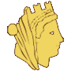
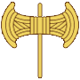
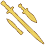
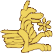
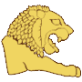

RTR: Imperium Surrectum
RTR: Imperium Surrectum
Phrygian← all beliefs · all cultures · all regions · wiki index
Internal token phrygian, in the Anatolian group. 17 of 1,312 regions · named as a people in 20 · 0 factions default to it
Where these answers come from
descr_beliefs.txt declares the belief, its pip and its localised name. Where it is is the rel_<belief>_<tier> tag on a region's tag line in descr_regions.txt — the trailing digit is a 1-4 strength tier and never a percentage. Who the people are is that same file's ancestry field, whose shares do sum to 100. Who follows it is stated twice, by descr_sm_factions.txt's default religion and by export_descr_buildings.txt's faction_religion_<belief> alias, and where the two disagree both are shown. What the mod does with it is read off export_descr_buildings.txt, with the clauses that GENERATE the belief kept apart from the clauses the belief GATES.
Where it is on the map
17 of the 1,312 regions carry a rel_phrygian_… tag — 1.3% of the map. What matters is whether it is the majority belief in the settlement or a minority one. The file records a finer number behind that, and it is not a percentage — the one place it shows is how much religious_belief a building generates, which is the table further down.
| Strength | Regions | Share of its regions | Strength | Regions | Share of its regions | |||
|---|---|---|---|---|---|---|---|---|
| Majority | 12 | 71% | Minority | 5 | 29% |
Majority — 12 regions
Aizanitis · Anatolike Tolistobogia · Charonia · Dorylaia · Korbeous · Megale Phrygia · Paroreia Phrygia · Paroreia Pisidia · Pessinountis · Synnadia · Tolistobogia · Trokmia
Minority — 5 regions
Mysia · Nea Tektosagia · Orgasia · Salone · Tektosagia
The people it belongs to
descr_regions.txt names Phrygian as a people living in 20 regions, 13 of them as the majority. Those shares come from the region's own ancestry field, which sums to 100 — they are a different measurement from the strength tier above and are not comparable with it.
Where its people live (20)
| Region | Share | Region | Share | Region | Share | Region | Share |
|---|---|---|---|---|---|---|---|
| Charonia | 90% | Korbeous | 90% | Nea Tektosagia | 90% | Pessinountis | 90% |
| Aizanitis | 80% | Dorylaia | 80% | Megale Phrygia | 80% | Paroreia Phrygia | 70% |
| Anatolike Tolistobogia | 60% | Paroreia Pisidia | 60% | Synnadia | 60% | Tolistobogia | 60% |
| Trokmia | 60% | Orgasia | 30% | Tektosagia | 30% | Mysia | 20% |
| Salone | 10% | Attike | 5% | Mlaundos | 5% | Peiraieus | 5% |
The two vocabularies do not line up exactly. 3 regions name this people but carry no belief tag for it — Attike, Peiraieus, Mlaundos. 0 carry the tag without naming the people. Which of the two the mod means as authoritative is not determined; both are shown.
Who follows it
No faction states this as its default religion. All 239 faction blocks were read and 239 default religion lines found.
exportdescr_buildings.txt declares no faction_religion_phrygian alias, so nothing in the buildings file can test for a faction being Phrygian. 42 such aliases exist for the 53 beliefs._
What builds it
These building levels generate the belief in a region that already carries its tag, and the amount is what the tier decides. This is what the 1-4 tier is *for*.
| Where | 1 | 2 | 3 | majority | Where | 1 | 2 | 3 | majority | Where | 1 | 2 | 3 | majority | Where | 1 | 2 | 3 | majority |
|---|---|---|---|---|---|---|---|---|---|---|---|---|---|---|---|---|---|---|---|
| Dependency | +4 | +8 | +12 | +16 | Direct Rule | +2 | +4 | +6 | +8 | Indirect Rule | +4 | +8 | +12 | +16 | Region Information Scroll | +2 | +4 | +6 | +8 |
Spread by conversion — none
Nothing outside the tier table grants this belief. All 4,329 conditional effect lines were checked for a religiousbelief phrygian grant._
What it gates
Nothing. No building level and no recruitment line in the mod is conditioned on a belief: all 272 building level blocks and all 29,752 recruit lines were checked against every rel<belief>_<tier> token, and 0 levels and 0 recruit lines came back. A belief is a number a settlement carries, not a key that opens anything._
Unrest and identity
| Group | Anatolian (anatolian) — the buildings file tests this group directly, with faction_religion_group_anatolian | Character trait | BeingPhrygian | Unrest against its own group | 0 | Unrest against other groups | 0 |
| Hidden at zero presence | yes | Unrest message | “Phrygian culture is causing unrest in this settlement” |
Every one of the 53 beliefs RIS declares sets both multipliers to 0. No belief in this mod creates unrest against another, whether they share a group or not — the religious tension of the base game is switched off across the board, and what the belief system is used for instead is the numbers above.
Its group
The Anatolian group (anatolian) holds 13 beliefs. The others are Anatolian, Cappadocian,

Carian, Cilician,
Isaurian,
Lycaonian, Lycian,
Lydian, Mysian, Pamphylian, Paphlagonian, Pisidian.A group has no name of its own in the mod — descr_beliefs.txt declares the token anatolian and no text file localises it. The name above is the belief of that same token, which is the mod's own.